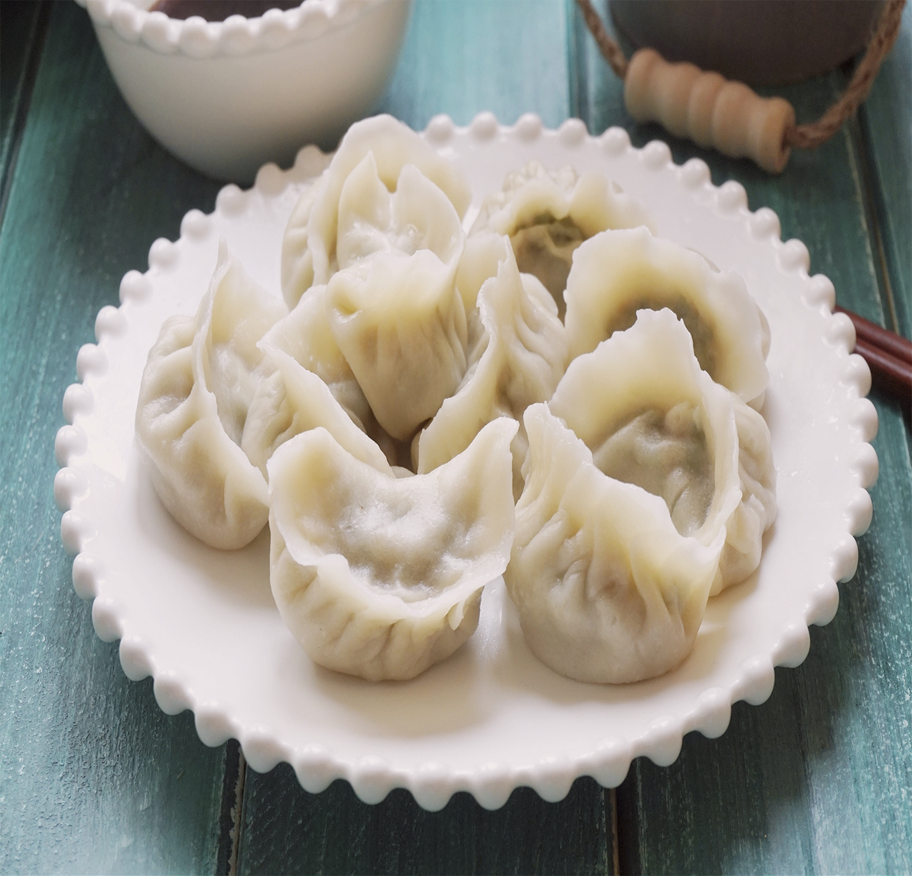
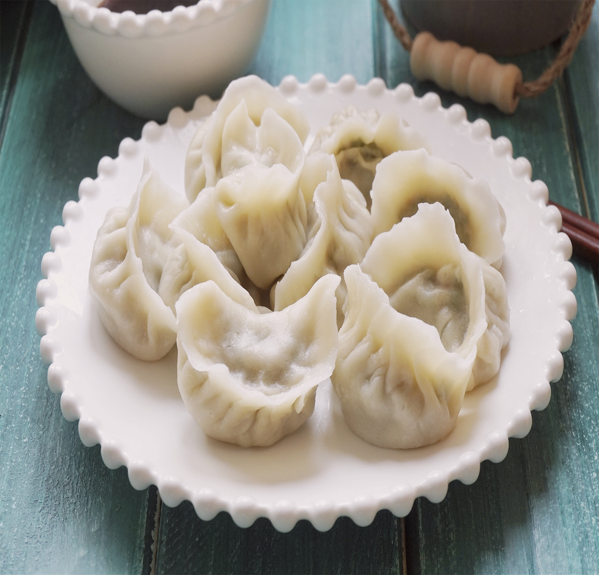
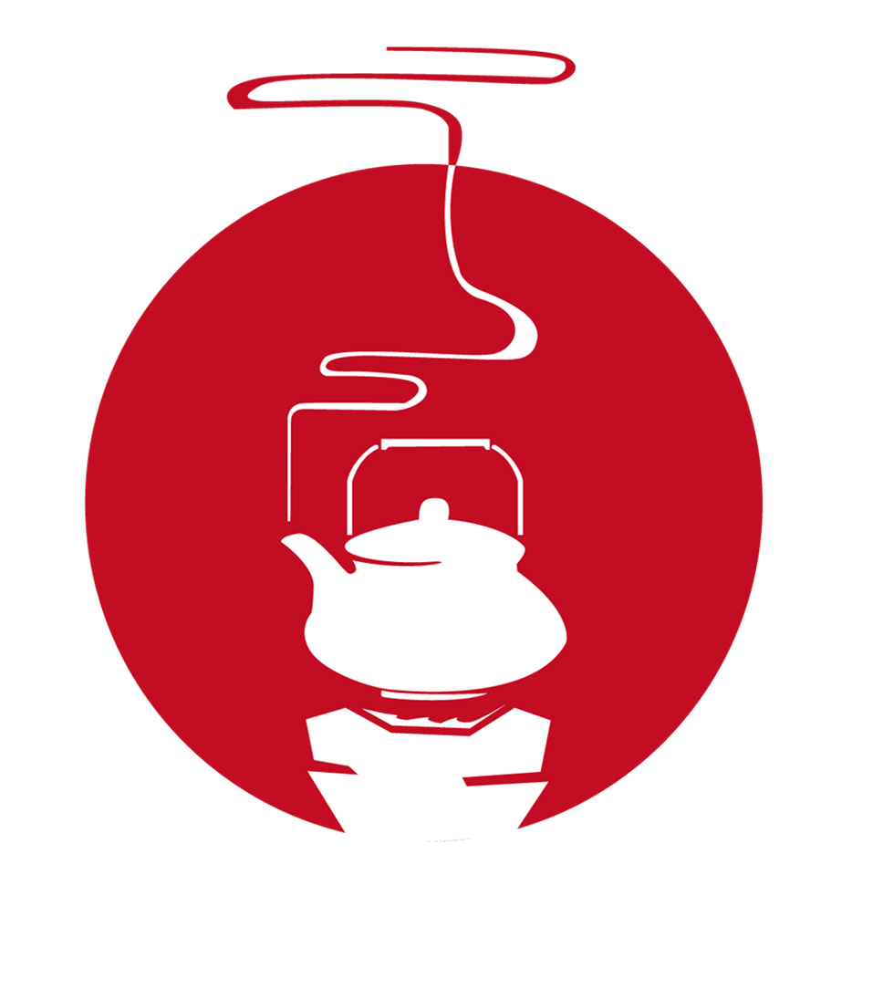
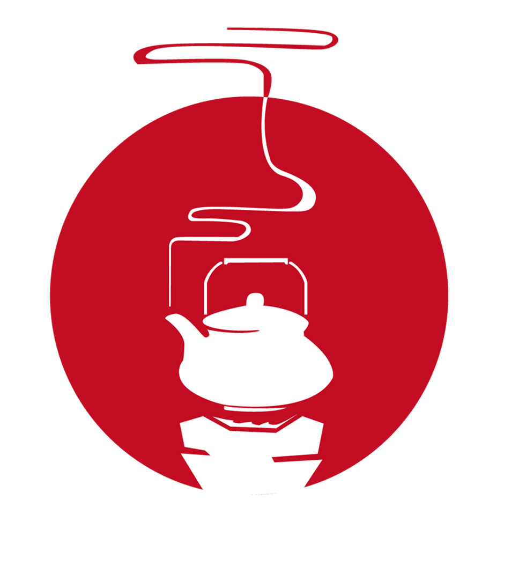
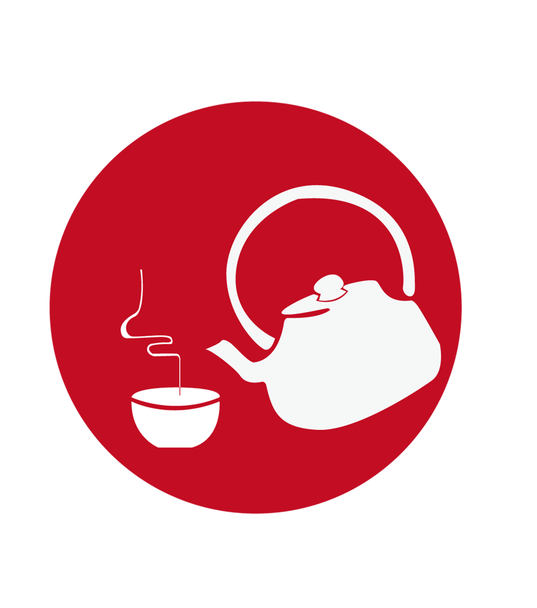
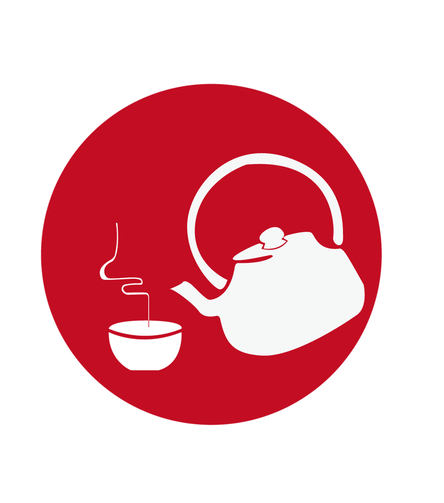

宗教哲学
佛、道、儒、阴阳、五行、罗盘、八卦、司南、法宝、禅宗、佛教、观音，
太上老君；烧香、拜佛、蜡烛。
民间工艺
潮绣、剪纸、风筝、中国织绣、中国结、泥人面塑、龙凤纹样（饕餮纹、如意纹、雷纹、
回纹、巴纹）、祥云图案、凤眼、千层底、檐、鹫。
中华武术
太极拳、咏春拳、南拳北腿、少林、武当、峨嵋、崆峒、昆仑、点苍、华山、青城、嵩山。
地域文化
潮汕文化、中土文化、江南文化、江南水乡、塞北岭南、大漠风情、蒙古草原、
青藏高原、大西北、桂林山水、天涯海角、中原、巴陵文化。
民风民俗
礼节、婚嫁（红娘、月老）、丧葬（孝服、纸钱）、祭祀（祖）；门神、年画、鞭炮、汤圆、饺子。


 


 

 
